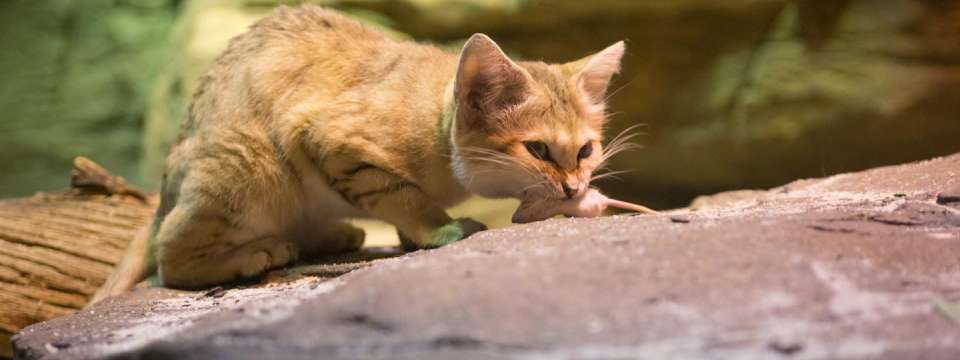

In the Ténéré Desert, sand cats were observed preying foremost on small rodents, and the young of cape hare (Lepus capensis), but also hunting greater hoopoe lark (Alaemon alaudipes), desert monitor (Varanus griseus), sandfish (Scincus scincus) and venomous Cerastes vipers. If they caught more than they could eat, they buried the remains for later consumption. They satisfied their moisture requirements from their prey but drank water if it was available. The Toubou people have reported incidents of sand cats coming to their camps at night and drinking fresh camel milk.
Home
Back